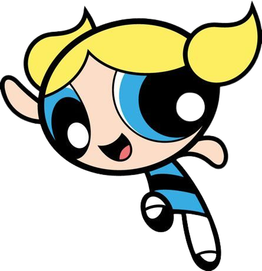

-
Lindinha
Amor
Descrição
Lindinha, ela é considerada ingênua e sensível, mas também é muitas vezes irresponsável e teimosa. Muitos inimigos consideram ela o ponto fraco da equipe. No entanto, se Townsville está ameaçada, ela não hesitará em lutar para protegê-la.
-
Florzinha
Líder
Descrição
Florzinha é a líder das Meninas Superpoderosas com uma perfeita combinção de inteligência, beleza e força! Ela é confiante, orgulhosa, batalhadora e egoísta. O trabalho dela é fazer com que as meninas estejam sempre preparadas para lutar contra o mal, e manter a verdade e a justiça em Townsville.
-
Docinho
Força
Descrição
Docinho, por conta da sua personalidade tende a ser grosseira às vezes, porém é bastante destemida, leal, inteligente e está sempre disposta a lutar e ajudar. Muitas vezes, é inconsequente, mas bastante espirituosa. É frequentemente sarcástica. Ela é a única que pode criar tornados que podem chegar ao espaço.